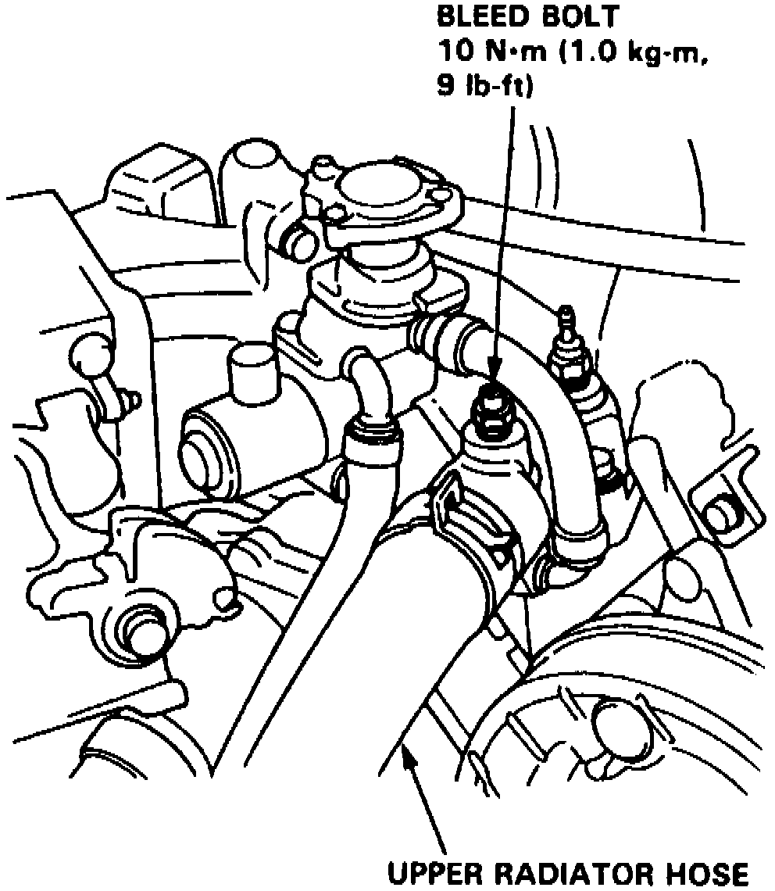

Cooling System: Service and Repair
1. Set heater temperature dial to maximum heat.2. With engine cool, remove radiator cap.
3. Refill cooling system to specifications, mixing coolant concentration to a 50-50 mix.
Fig. 100 Cooling System Bleed Bolt:

4. Loosen air bleed bolt in water outlet, Fig. 100, then fill radiator to bottom of filler neck.
5. Tighten bleed bolt to specifications as soon as coolant starts to run out in a steady stream without bubbles.
6. With radiator cap off, start engine and let run until warm (radiator cooling fan goes on at least twice).
7. Add more coolant mix to bring level back-up to bottom of filler neck.
8. Replace radiator cap, check for leaks.